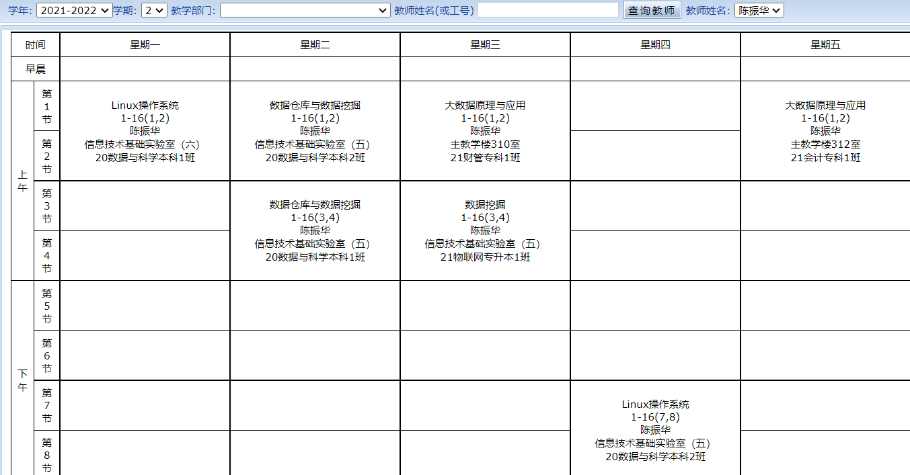

| 数据挖掘 | ||
| 第一次作业 |
1.文本数据预处理
①数据读取 ②去停用词 ③分词 ④word2vect/tf-idf 2.图像数据预处理①数据读取 ②数据归一化，如64*64 ③灰度化处理 ④图像增强 ⑤将图像数据转化为固定尺寸大小，如64*64 |
|
| 第二次作业 | 编写k-means代码 | |
| 第三次作业 | 使用sklear框架编写KNN、贝叶斯、决策树、SVM等模型，并选取一个数据经进行训练并测试 | |
| 第四次作业 | 推荐系统代码实现 | |
| 第五次作业 | 使用神经网络对mnist数据集进行训练与测试 | |
| Linux操作系统 | ||
| 第一次作业 |
1.文件和目录类命令
①在"/home"目录下创建"tools"文件夹 ②用cd命令进入"/home/tools" ③在"/home/tools"文件夹下创建"first"文件，并用vi编辑器打开"first",在里面写入"Hello [你的名字拼音]" ④将文件"first"设置为隐藏文件，并用"ls -a"命令显示隐藏文件 ⑤在"/home/tools"文件夹下创建"file1"文件夹，并用cp命令将"/home/tools"文件夹下"file1"文件复制到"/home/tools/first"文件夹中 ⑥在"/home/tools"中创建"newfile1"文件夹并复制到"/home/tools/first"目录中，删除"/home/tools"目录下"newfile1"文件夹 2.find命令利用find命令查看"first"文件的路径，并将find命令写入"/home/tools/first"中 3.yum命令运行yum install tmux安装tmux终端复用器 |
|
| 第二次作业 |
创建以自己名字拼英的用户名
①在创建的用户下用"touch"命令创建"second"文件 ②设置"second"文件允许所有人读、写与执行 ③用"vim"命令打开文件，并在文件中写入"Hello World！" |
|
| 第三次作业 | 安装部署jupyterhub | |
| 第四次作业 | 安装部署Apache服务器，并能够访问index.html | |
| 第五次作业 | 安装部署FTP服务，并上传任意一个文档到FTP中 | |
